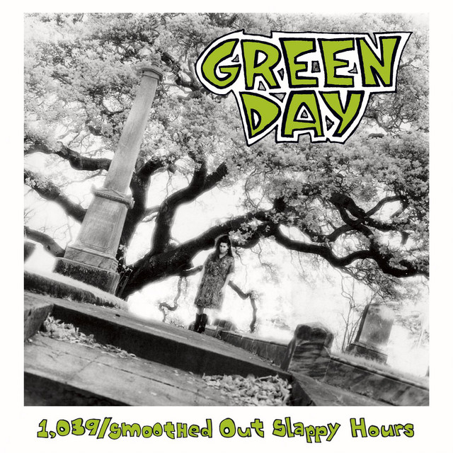

Studio Albums
Listed below are all the Studio Albums produced by Green Day.
39/Smooth
Green Day’s debut album released on April 13th 1990 and sold around 75,000 copies by 1994. The album has 10 tracks and has a total runtime of 31 minutes and 12 seconds. This album is one of 2 albums produced by Green Day under the label Lookout Records.

Kerplunk!
Green Day’s second album was released on December 17th 1991. It sold 10,000 copies on the day of its release, and as of January 2017 has sold over 4 million copies. Tre Cool made his debut as Green Day’s drummer on this album after former drummer John Kiffmeyer left the band. The album has 12 tracks and has a total runtime of 33 minutes and 56 seconds.This was the last album released under the label Lookout Records.

Dookie
Released on February 1st 1994, “Dookie” was a smash success, selling out the pre-produced 9,000 copies on the day of its release, and has sold over 20 million copies worldwide, making it one of the best selling albums in history. Dookie made Green Day a staple name in the world of music and was the first album released by Green Day under the label Reprise Records. The first single released on the album was “Longview”, later followed by “Basket Case”, “Welcome To Paradise”, and “When I Come Around”. The album has 14 tracks and has a total runtime of 39 minutes and 35 seconds.

Insomniac
Green Day’s fourth album was released on October 10th 1995 and sold 171,000 copies in its first week. The album's first single was “Geek Stink Breath” followed by “Stuck With Me”, which was focused on the backlash that Green Day’s original fans had to them signing on with a major label, and “Brain Stew / Jaded”. The album has 14 tracks and has a total runtime of 32 minutes and 49 seconds.

nimrod
Released on October 14th 1997, Green Day’s 5th album produced 4 singles, starting with “Hitchin’ a Ride” 2 weeks before the albums release, “Good Riddance (Time of Your Life)”, which has become the staple ending song of all their concerts, “Redundant” in 1998, and “Nice Guys Finish Last” in 1999. The first week of its release saw 81,000 copies released, and in 2000 was certified double platinum by the RIAA for selling over 2 million copies. The album has 18 tracks and has a total runtime of 49 minutes and 1 second.

WARNING:

American Idiot

21st Century Breakdown

Uno!

Dos!

Tre!

Revolution Radio

Father of All Motherfuckers